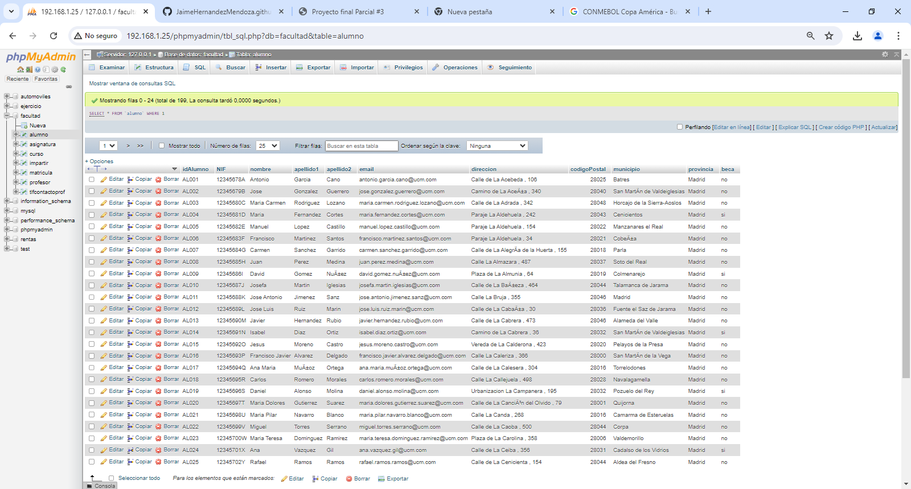
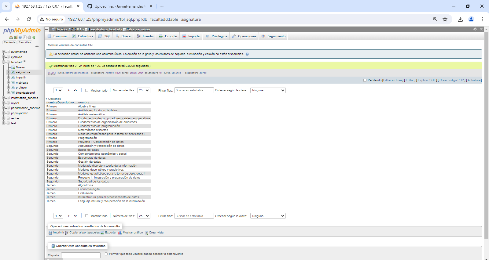
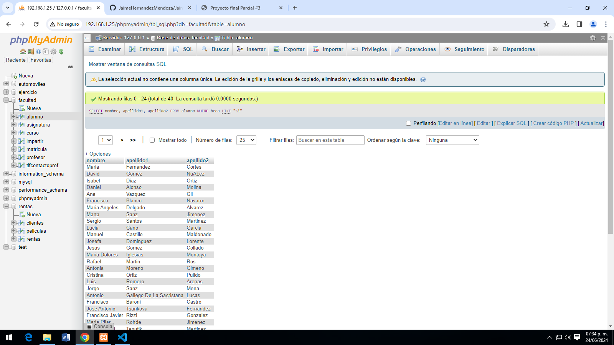
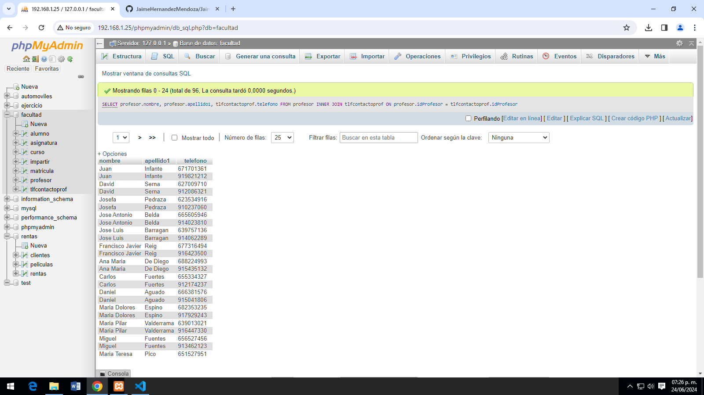
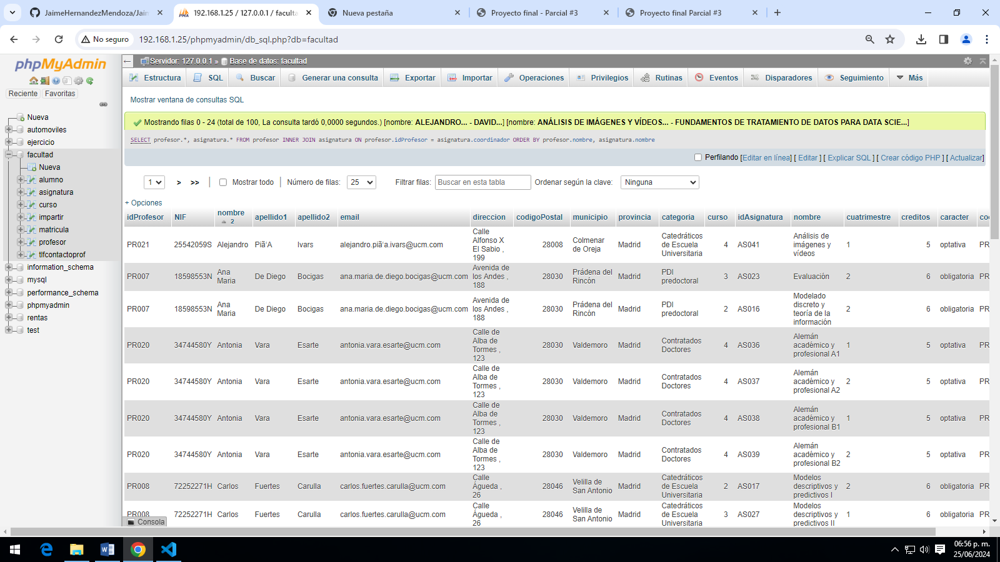
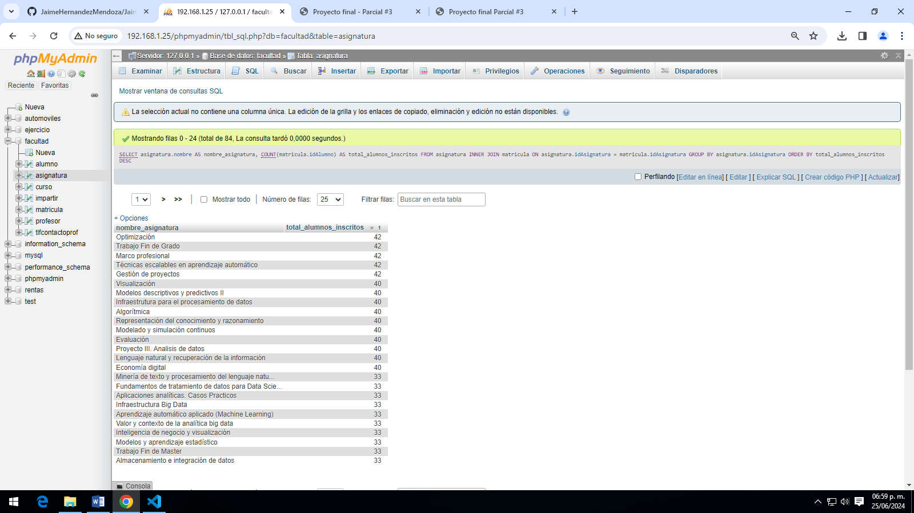
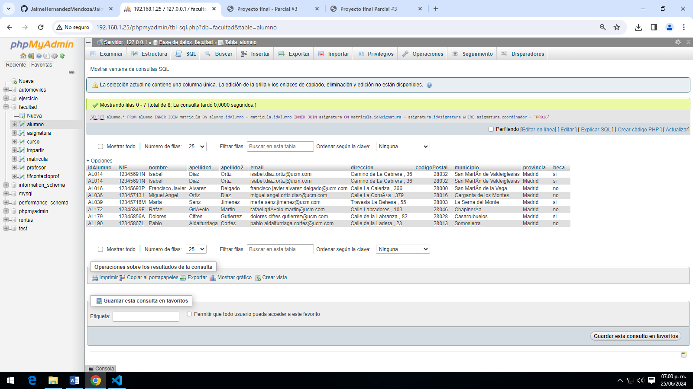
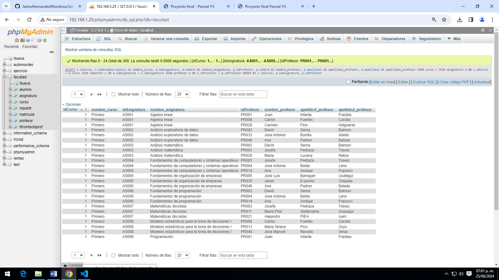
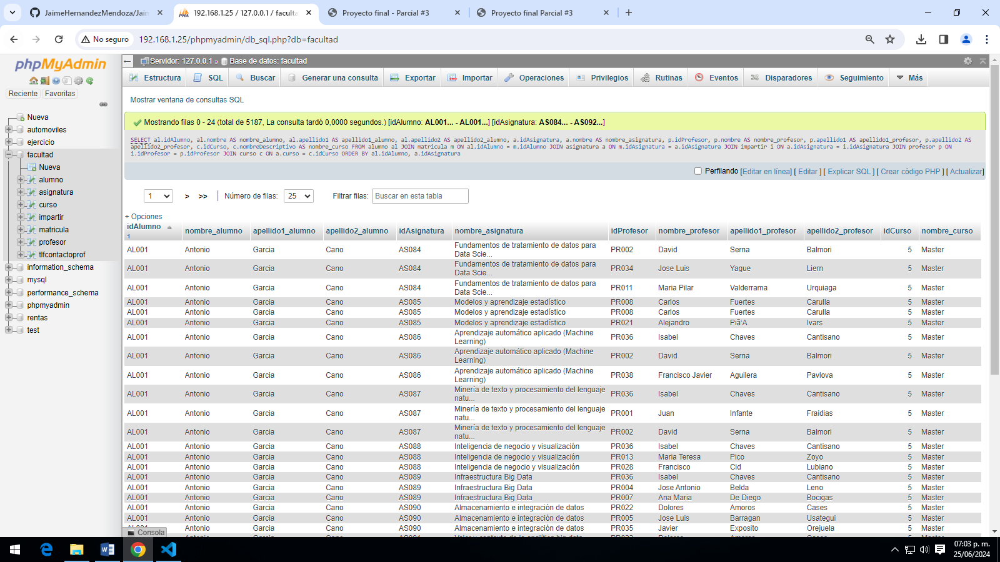

Proyecto final parcial 3
SELECT * FROM alumno;
Consulta #1. Obtener el listado de todos los alumnos de la facultad.
SELECT curso.nombreDescriptivo, asignatura.nombre FROM curso INNER JOIN asignatura ON curso.idCurso = asignatura.curso
Consulta #2. Obtener listado de cursos(nombre) y las asignaturas que tiene.
SELECT nombre, apellido1, apellido2 FROM alumno WHERE beca LIKE "si"
Consulta #3. Obtener listado (nombre y apellido) de alumnos que tengan beca.
SELECT profesor.nombre, profesor.apellida1, tlfcontacto.telefono FROM profesor INNER JOIN tlfcontacto ON profesor.idprofesor = tlfcontacto.idprofesor
Consulta #4. Obtener listado de profesores (nombre, apellido), y su numero de contacto.
SELECT alumno.nombre, alumno.apellido1, alumno.apellido2 FROM alumno INNER JOIN matricula ON matricula.idAlumno = alumno.idAlumno INNER JOIN asignatura ON matricula.idAsignatura = asignatura.idAsignatura WHERE asignatura.idAsignatura LIKE "As009"
Consulta #5. Obtener listado de alumnos (todos los campos) que están inscritos a la asignatura de programación.

SELECT profesor.*, asignatura.* FROM profesor INNER JOIN asignatura ON profesor.idProfesor = asignatura.coordinador ORDER BY profesor.nombre, asignatura.nombre
Consulta #6. Obtener listado de profesores y asignaturas que imparten.
SELECT asignatura.nombre AS nombre_asignatura, COUNT(matricula.idAlumno) AS total_alumnos_inscritos FROM asignatura INNER JOIN matricula ON asignatura.idAsignatura = matricula.idAsignatura GROUP BY asignatura.idAsignatura ORDER BY total_alumnos_inscritos DESC
Consulta #7. Mostrar la asignatura que tiene mas alumnos inscritos y su total.
SELECT alumno.* FROM alumno INNER JOIN matricula ON alumno.idAlumno = matricula.idAlumno INNER JOIN asignatura ON matricula.idAsignatura = asignatura.idAsignatura WHERE asignatura.coordinador = 'PR016'
Consulta #8. Obtener listado de alumnos que les da clase el profesor con id PR048 (Jose manuel), sin importar en que asignatura esté inscrito.
SELECT c.idCurso, c.nombreDescriptivo AS nombre_curso, a.idAsignatura, a.nombre AS nombre_asignatura, p.idProfesor, p.nombre AS nombre_profesor, p.apellido1 AS apellido1_profesor, p.apellido2 AS apellido2_profesor FROM curso c JOIN asignatura a ON c.idCurso = a.curso JOIN impartir i ON a.idAsignatura = i.idAsignatura JOIN profesor p ON i.idProfesor = p.idProfesor ORDER BY c.idCurso, a.idAsignatura, p.idProfesor
Consulta #9.
SELECT al.idAlumno, al.nombre AS nombre_alumno, al.apellido1 AS apellido1_alumno, al.apellido2 AS apellido2_alumno, a.idAsignatura, a.nombre AS nombre_asignatura, p.idProfesor, p.nombre AS nombre_profesor, p.apellido1 AS apellido1_profesor, p.apellido2 AS apellido2_profesor, c.idCurso, c.nombreDescriptivo AS nombre_curso FROM alumno al JOIN matricula m ON al.idAlumno = m.idAlumno JOIN asignatura a ON m.idAsignatura = a.idAsignatura JOIN impartir i ON a.idAsignatura = i.idAsignatura JOIN profesor p ON i.idProfesor = p.idProfesor JOIN curso c ON a.curso = c.idCurso ORDER BY al.idAlumno, a.idAsignatura
Consulta #10.
